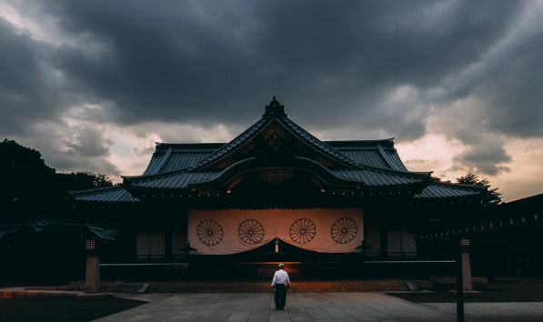
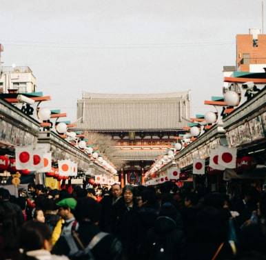
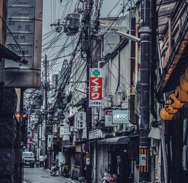
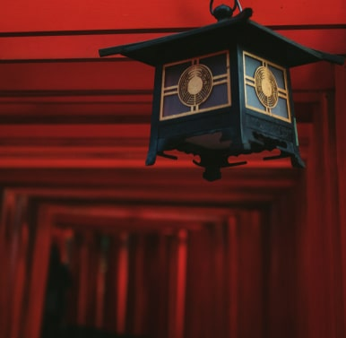
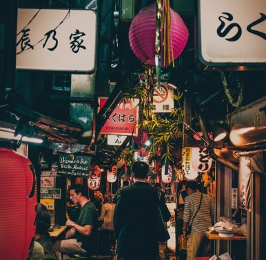

Discover Amazing places in Japan
Ancient temples and neon-lit streets, mountain trails and hidden izakayas — plan your perfect journey through Japan with tips from people who live there.
Benefits of Odigo
Welcome to Odigo!
Personal recommendations from locals who know Japan inside out — from famous landmarks to secret spots.
Learn moreYour Personal Japan Guide
Save places, build routes and keep all your travel notes in one pocket guide.
Learn morePromoting Local Businesses
We partner with family-run ryokans, cafes and craft shops, so every trip supports local communities.
Learn moreGet inspired for your next trip
View all
Prefecture in Focus: Tottori
Sand dunes that stretch to the sea, fresh crab at the morning market and the quietest temples in the country — Tottori is the prefecture nobody told you about.
View prefectureFeatured Neighborhood: Kyoto’s Arashiyama
Bamboo groves at dawn, the Togetsukyo bridge in the mist and monkeys on Mount Iwatayama — Kyoto's most photogenic neighborhood in one walk.
View prefectureToday top places to visit

Nagoya
A castle with golden shachihoko, the sprawling Osu shopping district and miso-katsu you will dream about.
See moreNiigata
Rice terraces, sake breweries and the snowiest winters in Japan — pure countryside magic.
See more
Osaka
Japan's kitchen: takoyaki in Dotonbori, street food in Shinsekai and the friendliest locals in the country.
See more
Saitama
Riverside towns, a bonsai village and easy day trips from Tokyo without the crowds.
See moreUeno
Museums, a giant park and the Ameya-Yokocho market — Tokyo's cultural heart on one stop.
See more
Shibuya
The scramble crossing, Hachiko and endless neon — the Tokyo from every movie, and it never sleeps.
See more